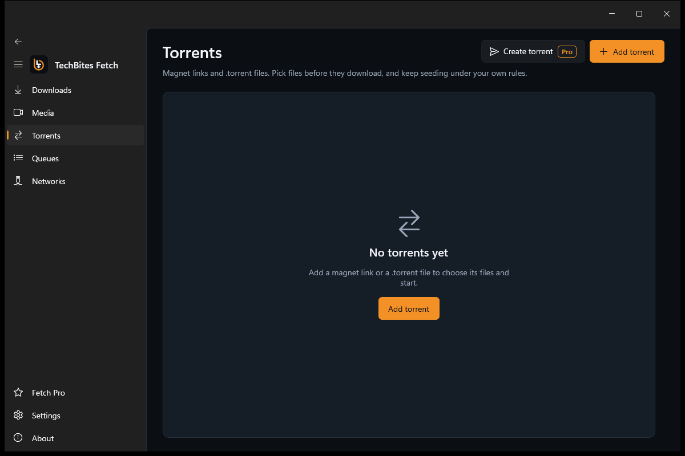
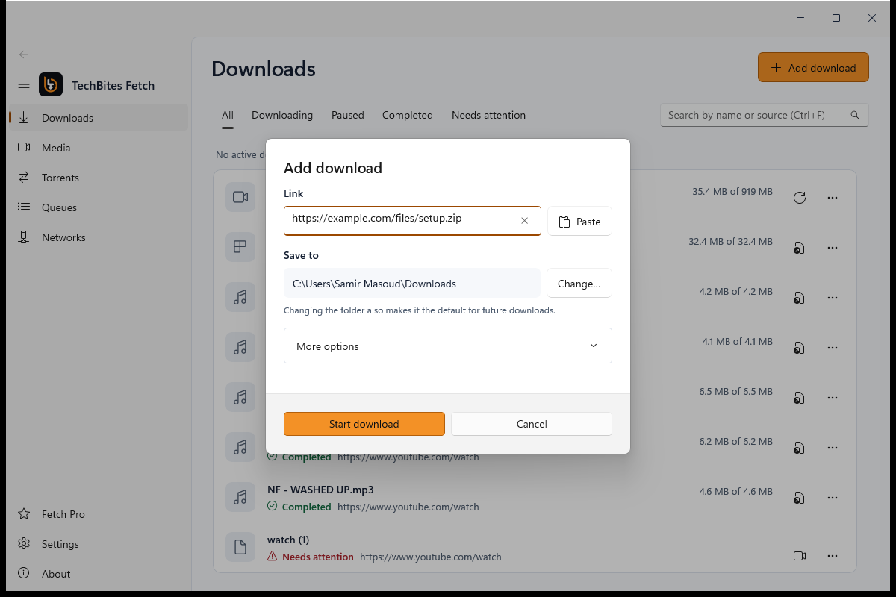
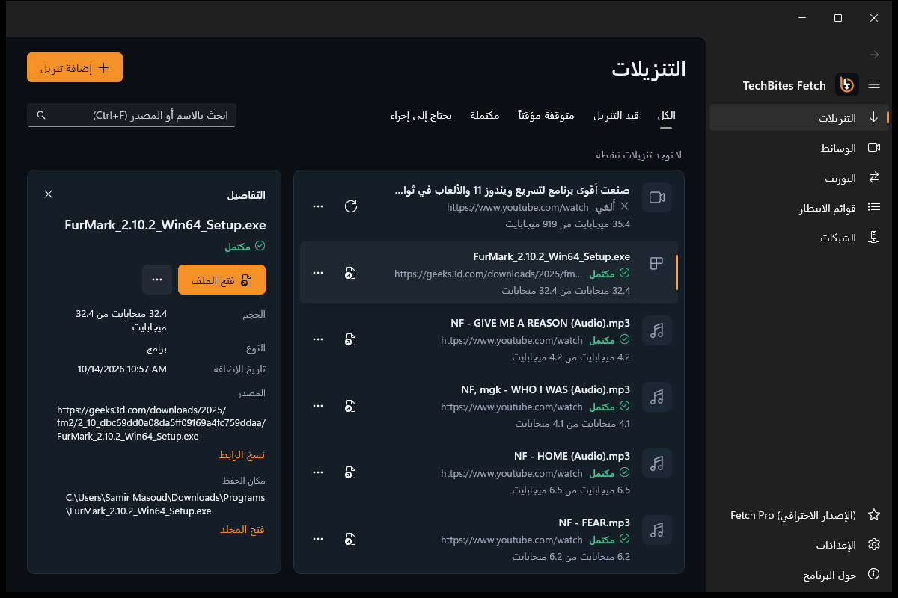

مجاني لويندوز 10 و 11
حمّل أي حاجة. بسرعة.
ملفات، فيديوهات يوتيوب، قوائم تشغيل، وتورنت في برنامج واحد. التحميل ده بيكمل وانت نازل في الصفحة.
تحميل لويندوز
أو انزل وكمّل التحميل

مجاني لويندوز 10 و 11
ملفات، فيديوهات يوتيوب، قوائم تشغيل، وتورنت في برنامج واحد. التحميل ده بيكمل وانت نازل في الصفحة.
CONNECTION 01
كل ملف بيتقسم لأجزاء بتتحمل جنب بعض، فتاخد أقصى سرعة للنت عندك. ولو النت فصل، بيكمل من مكانه.

CONNECTION 02
Fetch بيقرا الصفحة ويطلعلك كل جودات الفيديو والصوت، من 4K لحد MP3 خفيف.

CONNECTION 03
فيديوهات HLS والبلاي ليستات بتتحمل زي أي ملف عادي، وبتشوف السرعة والوقت المتبقي لكل واحد.
CONNECTION 04
لينكات magnet وملفات .torrent، وتختار الملفات اللي عايزها قبل ما تبدأ.

CONNECTION 05
اختار الفولدر والطابور لكل تحميل، وإضافات كروم وإيدج وفايرفوكس بتبعتلك أي تحميل بضغطة.

CONNECTION 06
واجهة كاملة من اليمين للشمال، مش ترجمة على الماشي. وبالإنجليزي بضغطة لو حبيت.

دلوقتي دورك. مجاني، من غير إعلانات، ومن غير حساب. وبيحدّث نفسه لوحده.
التثبيت
دوس على زرار التحميل وهتنزل TechBitesDownloader-win-Setup.exe.
لو ظهرت رسالة SmartScreen، اختار More info وبعدين Run anyway.
البرنامج هيفتح لوحده ويعرض عليك تضيف إضافة المتصفح.